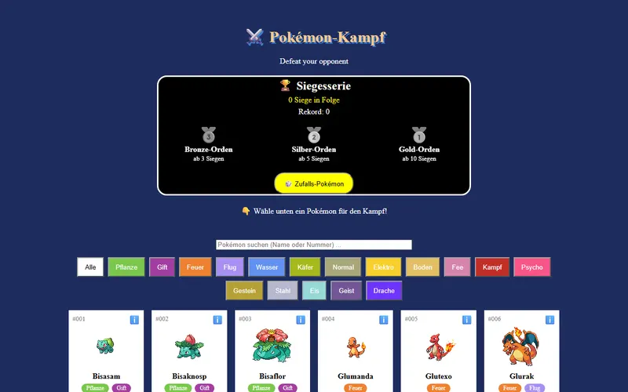

React-Apps 5
Interaktive Apps mit echten Daten aus dem Internet
HTML & CSS 5
Die ersten Schritte: Struktur und Gestaltung
JavaScript 1
Programmieren im Browser
Praktikum bei freenet
Alle Webseiten und Apps, die Leon Stanitzok im Praktikum gebaut hat: von der ersten HTML-Seite bis zur React-App mit echten Daten.
Interaktive Apps mit echten Daten aus dem Internet
Die ersten Schritte: Struktur und Gestaltung
Programmieren im Browser